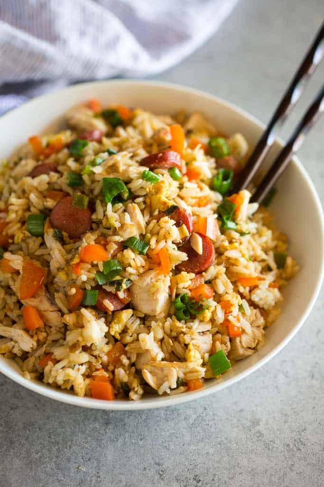

Arroz Chaufa (Peruvian Fried Rice)

Description
Arroz chaufa or arroz de chaufa means Chinese rice. It’s a Peruvian dish that was introduced by Chinese Peruvians who had immigrated to Peru between the 1960’s to late 1990’s.
Dishes like arroz chaufa that are a combination of Chinese and Peruvian cuisines are referred to as Chifa.
Ingredients
- pre-cooked rice
- hot dogs
- chicken
- green onion
- bell pepper
- eggs
- garlic
- ginger root
- soy sauce
- sesame oil
Steps
-
Cook hot dogs and veggies. Preheat a large skillet or wok to medium heat. Pour sesame oil in the bottom. Add hot dogs, onion, and bell pepper. Add garlic and ginger.
-
Scramble the eggs. Slide meat and veggies to the side and pour the beaten eggs onto the other side. Scramble the eggs and then it all together.
-
Add rice and sauce. Add the rice and chicken and pour the soy sauce on top. Stir and fry the rice and veggie mixture until heated through and combined. Season with additional salt, if needed, to taste.